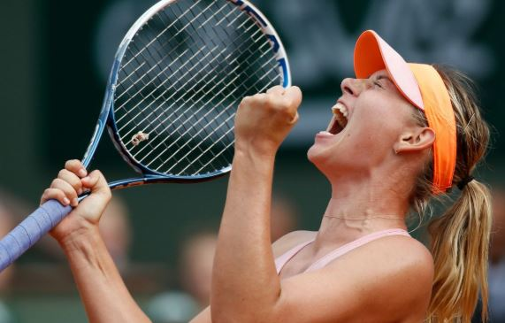

Face recognition · runs on your own server
Who's the athlete in the photo?
Drop in a picture and the model picks out every face and tells you which of five sports stars it is — with a confidence score for each.
Lionel Messi

Maria SharapovaRoger Federer
Serena Williams
Virat Kohli
Drop an image here
or click to browse · or paste from clipboard (⌘/Ctrl + V)
No photo handy? Try one:
Results will appear here
How it works
- 1Detect
YuNet finds every face in the photo, even small or angled ones.
- 2Embed
SFace turns each aligned face into a 128-number fingerprint.
- 3Classify
A trained SVM compares the fingerprint to the five athletes and reports probabilities. Low confidence? It says unknown instead of guessing.